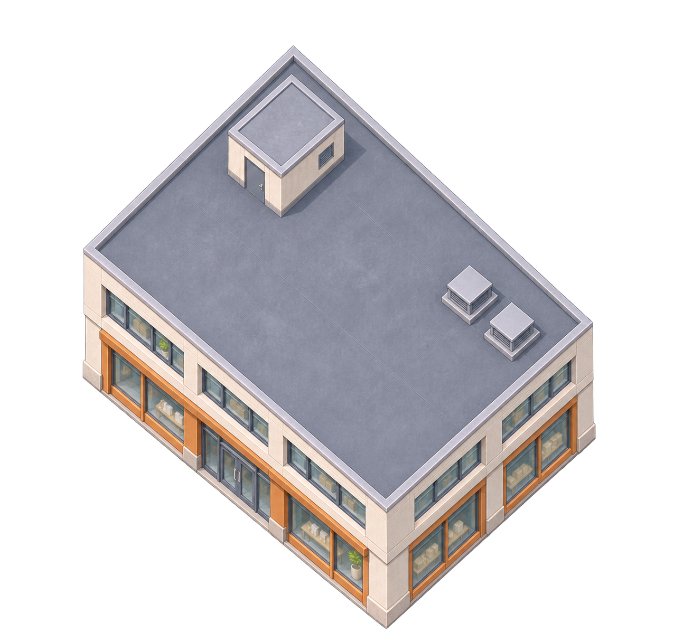
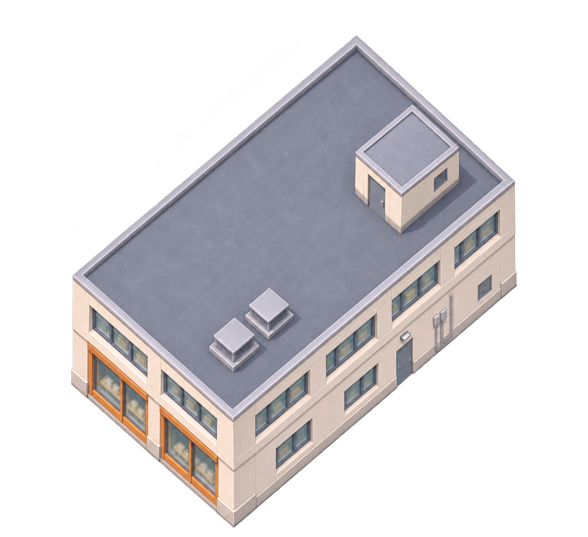
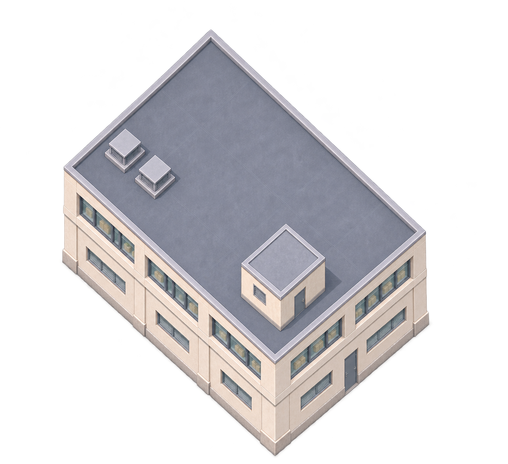
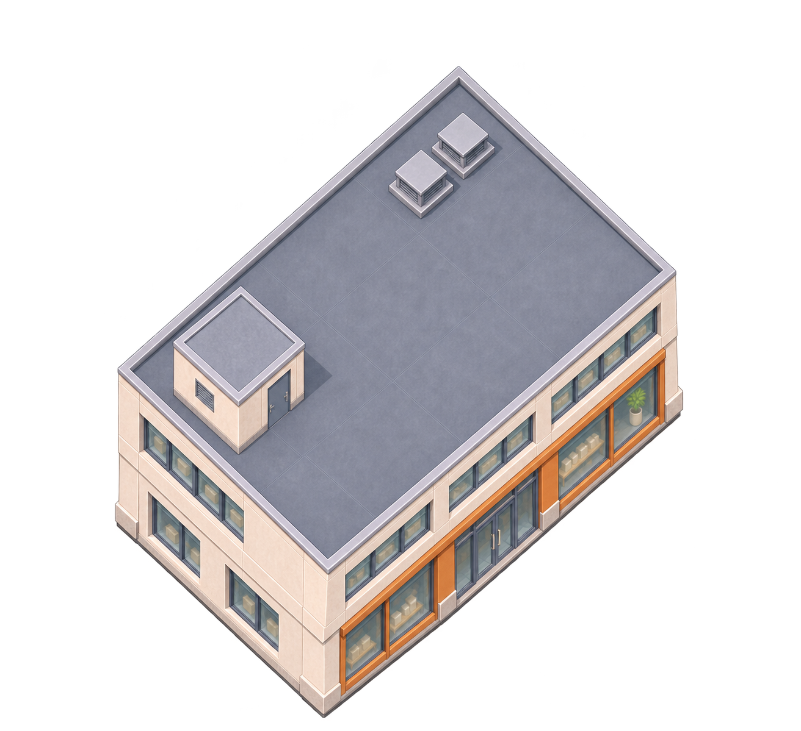
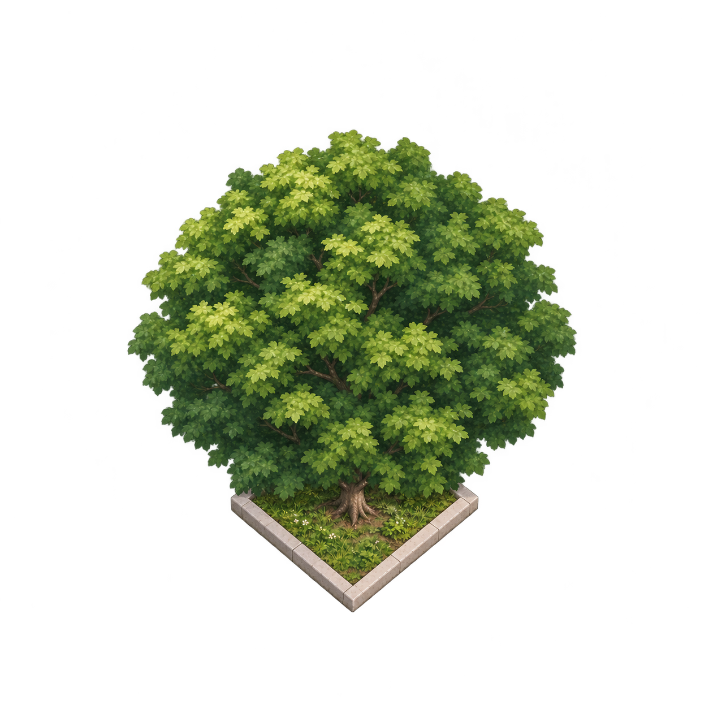
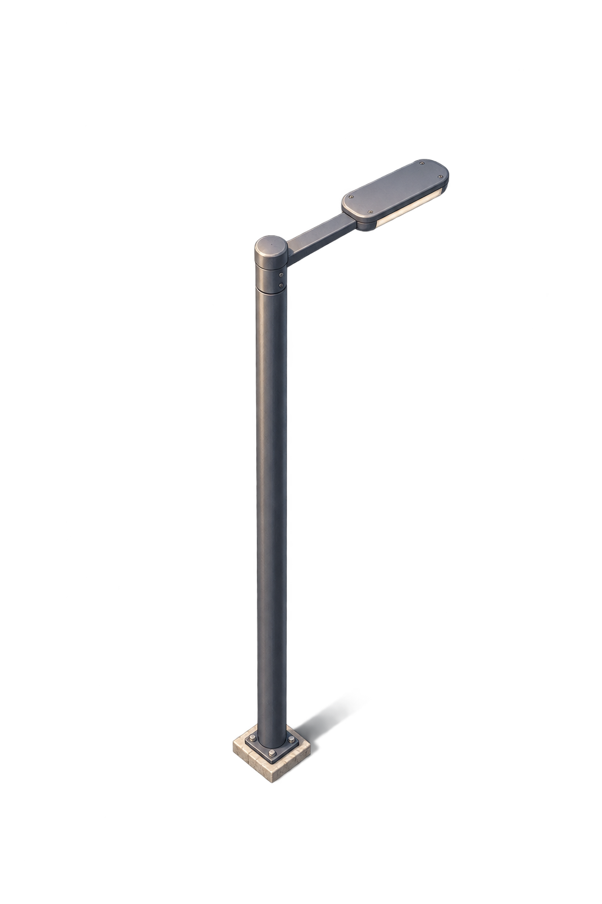
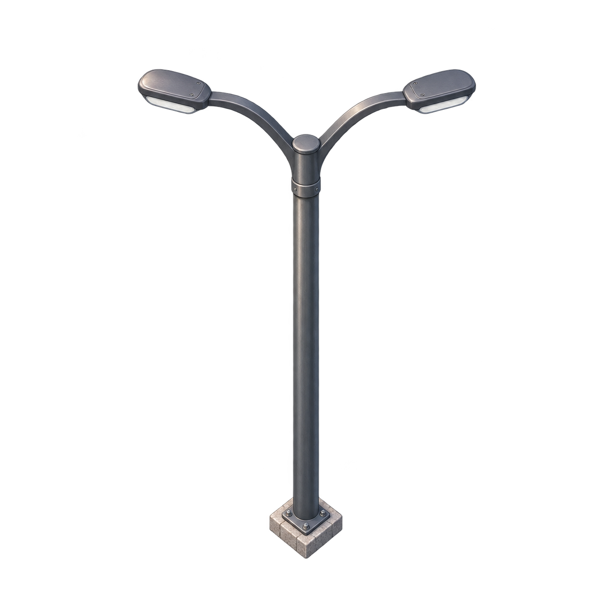

B01-F00-v2.png · 点击查看原图
B01-F90-v1.png · 点击查看原图
B01-F180-v1.png · 点击查看原图
B01-F270-v1.png · 点击查看原图
T01-v2.png · 点击查看原图
L01-v1.png · 点击查看原图
L02-v1.png · 点击查看原图已从失败对话恢复原文件，没有重新生成。先检查商铺四向、树池一体树和两款路灯。以下为原生图片；棋盘格是网页背景，用于检查透明边。
尚未通过：建筑轮廓可见白色/彩色边缘，方向间比例与机位仍需核对；Cocos中的旧骑手偏大。当前不代表素材稳定量产，不扩其余四栋。
Tiled请用本机原目录打开 integration/pilot.tmj，旁边 assets 文件夹必须保留；单独下载tmj不包含图片。三树、3灯、9灯是默认隐藏的可拆分组合图层。原41对象地图未覆盖。

B01-F00-v2.png · 点击查看原图
B01-F90-v1.png · 点击查看原图
B01-F180-v1.png · 点击查看原图
B01-F270-v1.png · 点击查看原图
T01-v2.png · 点击查看原图
L01-v1.png · 点击查看原图
L02-v1.png · 点击查看原图